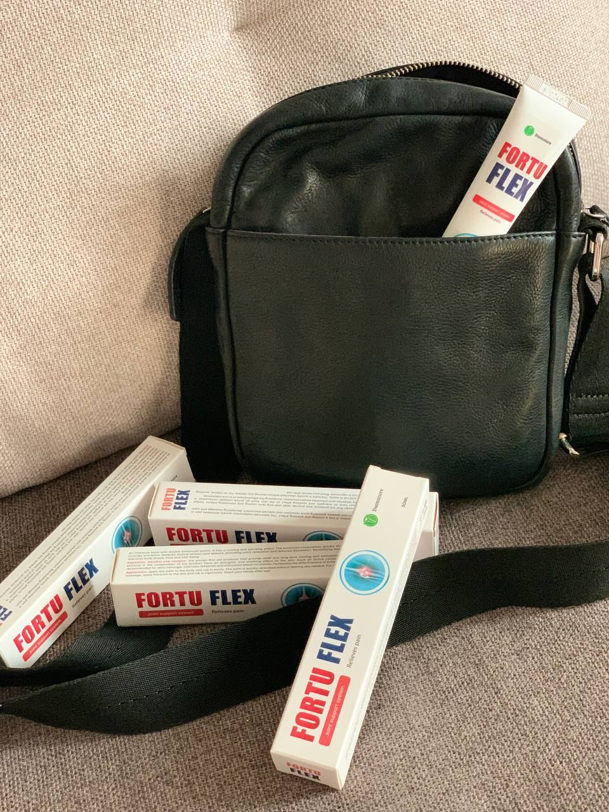

, 09:04
«¡Mis articulaciones estaban completamente destrozadas! Estuve a punto de perder mi trabajo. Pero mis amigos profesionales me salvaron a tiempo» - Jordi Mollà
Cómo un famoso actor y director estuvo a punto de quedarse en silla de ruedas por culpa de unas articulaciones destrozadas y qué le ayudó a recuperarse.

Nota editorial: ¡Asegúrese de leer hasta el final! A continuación, una entrevista con el renombrado médico José Luis Barbosa. ¡Además, la entrevista con Barbosa en la que honestamente le dice cómo restaurar las articulaciones de forma rápida, eficiente y barata y olvidarse del dolor para siempre!
Corresponsal: Jordi, hola. Gracias por conceder esta entrevista exclusiva a nuestra publicación. Ha habido muchos rumores sobre tu salud. Muchos de tus compañeros de rodaje nos han dicho que estuviste a punto de dejar el cine para siempre. ¿Es cierto?
Jordi Mollà: Hola. Desgraciadamente, no es un cuento. Estuve a punto de acabar en una silla de ruedas... La trágica enfermedad no me afectó por mucho tiempo, pero siempre recordaré aquellos 2 meses de dolor infernal e impotencia.
Corresponsal: ¿Qué ocurrió? ¿Cómo llegó a esta situación?
Jordi Mollà:Mi profesión implica una actividad física excesiva. Especialmente las articulaciones de mis piernas están sometidas a mucha presión. Ensayos durante años, rodar, rodar y volver a rodar... Siempre estoy de pie 18 horas al día, y los directores me obligan a ser espía, soldado o médico. Tenía que saltar, correr, dar volteretas, revolverme, caerme... y no soy joven... mis articulaciones estaban desgastadas y, como dijo un médico, "tus articulaciones se han convertido en polvo".
Me asusté oírlo. Significaba el fin de mi carrera y una invalidez inminente. Pero en aquel momento no me di cuenta de todo el peligro. Seguí trabajando, participando en distintos proyectos, pintando, montando exposiciones. Y eso fue un gran error.
Solía inyectarme analgésicos antes de empezar a rodar, y después de un día de rodaje me tragaba paquetes de pastillas para poder dormirme y no sentir dolor.
Mis rodillas casi dejaban de doblarse. Mi tobillo estaba hinchado todo el tiempo, así que no podía llevar zapatos. Apenas podía moverme, pero seguí trabajando. No podía abandonar mis proyectos ni a mis compañeros. Además, no podía interrumpir los rodajes y las exposiciones previstas. Los médicos me prohibieron trabajar, me amenazaron con una silla de ruedas. Pero yo no escuché a nadie, yo ignoré el problema y lo pagué caro...

Me gustaría llamar la atención de todo el mundo. ¡No cometáis los mismos errores! Si te duelen las articulaciones, ¡es grave! La enfermedad avanza muy deprisa y puede dejarte discapacitado en sólo seis meses.
Corresponsal: ¿Has ido al médico? ¿Has recibido algún tratamiento?
Jordi Mollà: Sí, fui al médico. Me pedían medicamentos caros de diferentes países. Cada vez esperaba que un medicamento americano o austriaco me ayudara, pero no obtuve ningún resultado. Gasté mucho dinero en pomadas, pastillas, inyecciones, procedimientos, pero todo fue en vano.
Si a mí no me ha ayudado un tratamiento caro, qué puedo decir de la gente corriente que tiene que utilizar fármacos y acudir a hospitales corrientes. Lo siento de veras por ellos...
Pero cuando durante un par de meses me convertí en un hombre intransportable, postrado en cama... quise suicidarme - mis familiares no me dejaron. Estaba tirado como... ¡No sé qué! ¿Vegetal? Esa no es la palabra. Me convertí en una carga para mi familia, un hijo inútil para mi madre e innecesario para mis colegas. Ni siquiera podía ir al baño o ducharme, ni siquiera podía cocinar una comida. Era una desgracia.
 (Foto del archivo personal de Jordi Mollà)
(Foto del archivo personal de Jordi Mollà)
Era tan desagradable sentirse inútil, no querido, olvidado y solo. Mis amigos dejaron de llamarme, todo el mundo se olvidó de mí... Me hundí en una depresión, no podía salir sin ayuda. Y no quería: los medios de comunicación, los paparazzi en la calle. Luego los titulares: "Mollà tiene una enfermedad terminal".
Sí, un enfermo terminal, ¡pero eso no es asunto suyo!
La enfermedad, el dolor, la soledad, la impotencia... ¡daban mucho miedo! No se lo desearía ni a mi más acérrimo enemigo.
Corresponsal: ¿Cómo has conseguido recuperarte? Has vuelto a la televisión, a interpretar nuevos papeles y a exponer en galerías.
Jordi Mollà: ¡Ha sido un milagro! No hay otra palabra. El destino me juntó con el famoso Dr. Barbosa. Nos conocimos en una exposición hace unos 12 años. Llamé y José Luis me recibió.
Me dio una crema, me dijo que se basaba en ingredientes poco comunes y que era difícil de conseguir. Para ser sincero, he probado muchas cosas y no creía que esta crema me fuera a ayudar. Pero al cabo de un par de días, me sentía mucho mejor.
Corresponsal: ¿Sólo gracias a esta crema?
Jordi Mollà: Sí, yo mismo me quedé atónito. Mis articulaciones ya no se "torcían", el dolor había desaparecido, ¡y pude dormir por primera vez en meses! Y cada día me sentía mejor. Al cabo de dos semanas, pude levantarme de la cama y caminar solo hasta el baño, agarrado a la pared. ¡Esta fue la primera victoria! Y este remedio me lo dio José Barbosa, ¡no dejaré de darle las gracias!
Al cabo de un mes ya podía moverme por el apartamento. Las piernas no estaban hinchadas, la hinchazón bajó. El dolor casi había desaparecido, recuperé la movilidad, podía doblar las rodillas.
Al cabo de 1,5-2 meses, volví al trabajo. Mis compañeros se quedaron muy sorprendidos cuando me vieron. "Jordi, ¿cómo es eso? Estás...". Se quedaron de piedra: ¡hace un par de meses era un inválido indefenso y ahora me valgo por mí mismo y me paseo por el plató!

Corresponsal: ¡Me alegro mucho de que todo acabara bien! ¿Qué planes tienes para el futuro? ¿Qué nos puedes mostrar pronto?
Jordi Mollà: ¡Tengo muchos planes! Voy a seguir haciendo películas. Voy a hacer marketing social. Y pronto mis queridos fans tendrán dos nuevas exposiciones, pero por ahora es un secreto.
Corresponsal: ¡Muchas gracias, Jordi, por esta franca entrevista! ¡Mantente con salud y complacenos con tu arte muchos años más!
Jordi Mollà: ¡Gracias! Os deseo mucha salud, ¡que es lo más importante en la vida!
Nos reunimos con el médico de Jordi Mollà, José Luis Barbosa, y hablamos de las enfermedades articulares. José Luis nos contó:
José Luis nos dijo cómo salvarse de una silla de ruedas y rápidamente deshacerse de la artritis, la osteocondrosis y otras enfermedades de las articulaciones.
Corresponsal: ¡Hola, señor Barbosa! Según la Organización Mundial de la Salud, una de cada tres personas en nuestro país padece artritis. ¿A qué se debe esta epidemia?
J.L. Barbosa: Hola. Desgraciadamente tiene usted razón. El número de enfermedades articulares crece rápidamente. Si antes mis pacientes eran en su mayoría personas mayores, pero hoy en día cada vez más vienen a mí jóvenes de 30-40 años.
Y lo peor es que en nuestro país la gente no está preparada para prestar suficiente atención a su salud. Los pacientes esperan hasta el último momento y acuden a mí cuando ya están agotados por el dolor y pierden la oportunidad de llevar una vida normal. Es mucho más fácil ir a la farmacia, comprar una pomada anestésica, untársela en una articulación dolorida y volver al jardín a escardar.
No lo olvide. Los remedios de farmacia sólo enmascaran los síntomas. No resuelven el problema ni curan la artrosis y la artritis. ¡Sólo está perdiendo el tiempo y acercando su discapacidad!
Mire estas fotos, puede ver que en la foto de la derecha no hay espacio articular, los huesos se están rozando entre sí, causando el dolor más severo. ¡Y el proceso es muy difícil de parar! En un par de años, estará discapacitado y no podrá valerse por si mismo.
Corresponsal: ¿Cuáles son las causas de las enfermedades articulares?
J.L. Barbosa: En primer lugar, son los traumatismos y las cargas graves. El exceso de peso también ejerce mucha presión sobre las articulaciones.
El sedentarismo, el estrés, la abundancia de sal y azúcar en los alimentos... todo ello reblandece el tejido cartilaginoso, lo desgasta y lo adelgaza. Cada nuevo movimiento erosiona y deforma el cartílago, los huesos se rozan entre sí causando un dolor intolerable.
La artritis reumatoide y la osteoartritis pueden provocar discapacidad entre 3 y 5 años después del inicio de la enfermedad, y acortar la esperanza de vida de los pacientes entre 15 y 20 años.

Por desgracia, muchos pacientes pasan por alto los primeros síntomas, dejan que la enfermedad siga su curso y acuden al médico cuando ya es demasiado tarde. A menudo también me encuentro con autotratamientos, a veces de las formas más absurdas, como envolver las articulaciones con hojas de col, untarlas con miel, etc.
No bromee con la artrosis y la artritis. ¡Las enfermedades articulares lo dejarán en silla de ruedas en menos de 3 años!
Corresponsal: ¿Cuándo es el momento de dar la voz de alarma? ¿Cuáles son los síntomas que deben alertar?
J.L. Barbosa: Los siguientes síntomas deberían alertar:
- Dolor al doblar las articulaciones.
- Entumecimiento en los dedos de las manos o de los pies.
- Crujido al tirar.
- Hinchazón y enrojecimiento de la articulación.
- Sensación de arena en las articulaciones.
- Fiebre exagerada.
Corresponsal: ¿Cómo ayuda Ud a la gente? Sabemos que ayudó a Jordi Mollà a levantarse de su silla de ruedas. Háblenos de ello, por favor.
J.L. Barbosa: La ciencia no se detiene. Hoy en día hay herramientas innovadoras que pueden hacer muchas cosas. E incluso levantarse de una silla de ruedas. Pero, por desgracia, no te las recetan en la clínica y no puedes comprarlas en la farmacia.

¿Es rentable vender algo que eliminará para siempre los problemas articulares? No, les beneficia vender productos a los que los pacientes están acostumbrados y que utilizan continuamente. Por desgracia, las farmacias son un negocio. Una tienda que vende baratijas, que no sirven para tratar las articulaciones, sino para desviar dinero de los enfermos.
Corresponsal: ¿De qué remedio eficaz habla? ¿Qué ayudó a Jordi Mollà?
J.L. Barbosa: No sólo a Jordi, sino a miles de personas corrientes. Estoy hablando de Fortuflex. Un desarrollo de nuestro Instituto de Reumatología. Un desarrollo verdaderamente único y, yo diría, revolucionario de nuestros científicos. Es una crema totalmente natural que puede restaurar las articulaciones a nivel celular. Con un tratamiento, por supuesto.
Fortuflex contiene un gran complejo de extractos de plantas y componentes bioactivos con una estructura molecular altamente activa.
No voy a enumerarlos todos, pero hablaré de los componentes principales:

- El extracto medicinal de hoja de consuelda suprime la inflamación y alivia el dolor;
- El aceite de eucalipto cítrico restablece la circulación sanguínea en la articulación;
- La resina de guindilla silvestre estimula la síntesis de colágeno y el crecimiento celular del cartílago;
- El aceite de limón previene el proceso de envejecimiento de la articulación.
Además de suprimir rápida y eficazmente la inflamación, restablecer todos los procesos metabólicos y activar la regeneración de cartílagos y articulaciones, esta crema también proporciona un efecto curativo integral en todo el organismo. Compruébelo usted mismo:
1. Las articulaciones y la columna vertebral se recuperan
El 98,3% de los pacientes se libran del dolor en las articulaciones y la columna vertebral. ¡Esto es casi un resultado del cien por cien! Nunca antes había visto algo así, ningún otro remedio ha demostrado tal eficacia.
Debido a su composición natural y la ausencia de química y OMG, Fortuflex combate la causa de las enfermedades. Con su ayuda, usted puede deshacerse de la hinchazón, la inflamación y el dolor en las articulaciones y restaurar completamente sus funciones en casa en sólo 1,5-2 meses.
2. Reduce el riesgo de derrame cerebral e infarto de miocardio
La artritis, la artrosis, la ciática, la gota y otras enfermedades de las articulaciones van acompañadas de una inflamación aguda y generalizada en el organismo. Todos los parámetros importantes, como la velocidad de sedimentación, el recuento de glóbulos rojos y el recuento de plaquetas, se disparan de repente, lo que supone una amenaza directa para el corazón.
Debido a que Fortuflex detiene la inflamación de forma fiable, el riesgo de infarto de miocardio y accidente cerebrovascular en la fase aguda de las enfermedades reumáticas se reduce en un factor de 7.
3. Mejora la inmunidad
Durante un tratamiento con Fortuflex, los pacientes han observado una mejora general del flujo sanguíneo a la médula ósea, que produce células inmunitarias. Esto conduce a un refuerzo de las fuerzas de defensa del organismo.
La inmunidad, que funciona al menos al 50%, es una barrera infranqueable para los virus. Y esto también es muy importante hoy en día.
Fortuflex crema además:
- Disuelve las placas de colesterol en los vasos sanguíneos.
- Aumenta la permeabilidad capilar.
- Alivia el vasoespasmo causado por el estrés.
- Y por último, normaliza la tensión arterial.
En resumen, Fortuflex:
- Es un remedio natural que puede deshacerse del dolor articular y de espalda en sólo 1,5-2 meses en casa sin visitar a los médicos o cirugía.
- Certificado en España, es completamente natural y no tiene efectos secundarios.
- Tiene un amplio campo de acción y un efecto complejo sobre las articulaciones doloridas.
- Está indicado para: artritis y artrosis de todos los estadios, inflamaciones e infecciones, cambios relacionados con la edad, lesiones, sobreesfuerzos y malformaciones congénitas.
- Fortuflex es, con diferencia, el remedio más eficaz y SEGURO para la salud de las articulaciones (clínicamente probado).
Corresponsal: ¡realmente impresionante! ¿Un remedio tan eficaz nunca llegará a las farmacias y la gente corriente no podrá utilizarlo?
J.L. Barbosa: Como ya he dicho, las farmacias no pueden vender remedios que restauren las articulaciones de forma permanente y no pueden cobrar un 500-600% por ellos. Fortuflex es uno de esos productos.
Su desarrollo fue llevado a cabo por las estructuras científicas estatales, por lo tanto, las farmacias privadas no están interesadas en este remedio, así como tampoco están interesadas en la salud de la gente común.
¿Por qué ocurre esto? Mientras la gente gasta mucho dinero en las farmacias en maniquíes inútiles y se acurruca en dolores infernales, los propietarios de cadenas de farmacias y médicos corruptos no quieren dejar que salga al mercado una solución a todos estos problemas.
Ciertamente estamos luchando con la situación, pero mientras tanto tenemos que encontrar la manera de distribuir Fortuflex a aquellos que realmente lo necesitan y tratar de desarrollar este tipo de medidas de apoyo.
Corresponsal: ¿A qué tipo de medidas de apoyo se refiere?
J.L. Barbosa: Me refiero a la campaña de promoción que ha lanzado el fabricante de Fortuflex. En el marco de esta promoción, cualquier ciudadano que cumpla las condiciones de distribución preferente puede pedir Fortuflex con un descuento del 50%.
El producto puede pedirse rellenando el formulario de pedido oficial, la promoción tiene una duración limitada, lo que no es de extrañar: la gente se pasa información sobre el producto y la expectación crece día a día.
Corresponsal: Gracias, José Luis, sin duda publicaremos toda la información necesaria para nuestros lectores.
Condiciones para recibir Fortuflex en el marco de la promoción:
- Estar registrado en España
Pueden beneficiarse de la promoción los ciudadanos que estén registrados como residentes permanentes en España.
- Sólo para uso personal
Esto es para combatir a los revendedores que tratan de obtener Fortuflex al por mayor y revenderlo con su margen de beneficio.
- Rellene el formulario de pedido oficial del fabricante
Introduzca su nombre y número de teléfono y obtenga Fortuflex con un 50% de descuento
ADVERTENCIA! Estudios recientes han confirmado que la época más favorable para empezar a utilizar Fortuflex es e . El cambio de temperatura ayuda a acelerar el metabolismo y acelerar la recuperación de las articulaciones.
María Martínes
Estoy muy agradecida por este remedio. Hace mucho que busco algo similar. ¡Gracias!
Me gusta
Contestar
Traducir
hace una hora
Ana Solís
Tenía artrosis. Y ahora no lo tengo más… Desapareció solo durante un curso de aplicación de la crema. ¡Gracias por eso!
Me gusta
Contestar
Traducir
hace una hora
Antonio Nieto
Lo mismo se refiere a mí. Es un remedio muy eficaz de tratamiento de enfermedades de articulaciones. Las articulaciones de los codos y las rodillas ya no duelen más.
Me gusta
Contestar
Traducir
hace una hora
Andrés Santana
Gracias por este producto. Vd. salvó no solo a Su mujer, solo a mucha gente más. Hace poco probé aplicar Fortuflex a la parte de cuello de la columna vertebral, ahora me siento mucho mejor. Espero que en el futuro será aun mejor.
Me gusta
Contestar
Traducir
hace una hora
Diego López
Chicos, ayúdenme. Estoy harto de dolores de espalda. La falta de confort y el dolor es una verdadera tragedia. Ya no sé qué hacer. Aplico varios fármacos, aplico varios geles al sitio que me duele, pero nada ayuda:(
Me gusta
Contestar
Traducir
hace una hora
Tomás Muralla
Diego, pida Fortuflex, le ayudará. Tuve el mismo problema, no pude de caminar a causa de articulaciones enfermas. Gracias a mi madre busqué esta crema, me aconsejó usarla. A propósito, la compramos hace medio año, sin descuento (aunque el precio no era alto). Ahora ya no tengo problemas de articulaciones, me muevo con ligereza. Créame, úsela y todo estará bien, además, ahora se puede recibirla gratis, Vd. no pierde nada.
Me gusta
Contestar
Traducir
hace una hora
Elena Órtiz
¿Cómo pedir Fortuflex?
Me gusta
Contestar
Traducir
hace una hora
José Aretio
Viviana, ecco il link sul Elena, a través del formulario oficial. La crema realmente me ayudó
Me gusta
Contestar
Traducir
hace una hora
Elena Órtiz
José, sí, gracias, ya lo pedí. Por favor, ¿podría decirme cuánto lleva la entrega?
Me gusta
Contestar
Traducir
hace una hora
José Aretio
Elena, la crema se entregará en 2-3 días más o menos)
Me gusta
Contestar
Traducir
hace una hora
Manuela Gómez
Pedí Fortuflex para mi hermana hace dos meses. Sufría de artritis mucho tiempo. Cómo me agradeció más tarde por arriesgarme y hacer el pedido
Me gusta
Contestar
Traducir
hace una hora
Juan Millás
Manuela, ¿es tan eficaz?
Me gusta
Contestar
Traducir
hace una hora
Pedro Rocasolano
He oído hablar de este producto, Algunos de mis amigos pidieron algo similar. Tengo problemas de pierna después de una lesión, ya llevo más de un año con dolores importantes, los médicos no ayudaron... ahora he leído este artículo y decidí pedir Fortuflex. Voy a hacer un pedido ahora mismo, ya no lo aguanto más.
Me gusta
Contestar
Traducir
hace una hora
Marco López
Veo que no solo yo tengo estos problemas, gracias a Dios, hace un mes apliqué Fortuflex, me quitó la osteocondritis tan rápido como ninguno de decenas de remedios para articulaciones.
Me gusta
Contestar
Traducir
hace una hora
Olga Viedma
¿Les ayuda realmente, chicos? Los fármacos y los médicos resultaron ser inútiles para mí.
Me gusta
Contestar
Traducir
hace una hora
Miranda Flor
Olga, por supuesto. El efecto es muy fuerte, pero lo más importante es que no dañe Su salud. Por lo tanto, apresúrese a hacer un pedido. Fortuflex me ayudó a deshacerse totalmente de problemas de espalda.
Me gusta
Contestar
Traducir
hace una hora
Crisálida Medina
Gracias, Fortuflex me ayudó mucho. Lo pedí en el sitio web oficial directamente. No espere demasiado, es mejor deshacerse del problema ahora mismo que entender más tarde que ya no puede moverse.
Me gusta
Contestar
Traducir
hace una hora
Concha Moreno
¡Si no fuera por Vd., no me habría creído jamás en la eficacia de este Fortuflex! Mi marido tuvo el mismo problema que Su mujer, más de 5 años. Sufría muchísimo. Y ahora corre como si tuviera 18 años otra vez. El paquete llegó muy rápido.
Me gusta
Contestar
Traducir
hace una hora
Concha Moreno
Más o menos un mes de aplicación de la crema, ahora el marido se mueve libremente, no se queja del dolor. Estoy muy contenta de su salud.
Me gusta
Contestar
Traducir
hace una hora
Pedro Fernández
El resultado superó todas mis expectativas. La radiculitis reapareció para siempre. Pedí la crema para mis amigos, uno tiene dolores de espalda y otro, de codo.
Me gusta
Contestar
Traducir
Hace 57 minutos
Cristina Padilla
Hoy, hace muy poco, formalicé el pedido.....
Dejé mi teléfono en el formulario del pedido, casi enseguida me llamaron para confirmar el pedido. Por fin deseo vivir en paz, disfrutar de paseos etc.
Me gusta
Contestar
Traducir
Hace 55 minutos
María Cánovas
Ya la pedí para mí misma, mi artritis me torturaba muchísimo durante varios años. Cada vez que llovía o cambiaba el tiempo, me sentía casi sin piernas. Fortuflex me ayudó en pocas semanas. Ni siquiera pude creer que fuera posible.
Me gusta
Contestar
Traducir
Hace 53 minutos
Tania Olmo
Una conocida nuestra tiene una farmacia privada donde esta crema vale casi 100 EUR, por lo tanto, no la pude comprar. Y aquí la vi gratis y la pedí enseguida, porque mi pensión es miserable y no echo el dinero por la ventana. Mi rodilla ya no me molesta más, y trabajo en el jardín sin dolores de forma confortable. ¡Gracias!
Me gusta
Contestar
Traducir
Hace 48 minutos
Leticia Paz
Fortuflex me ayudó a curar la gota solo en un curso de aplicación, y ahora lo tengo siempre en mi botiquín por si acaso.
Me gusta
Contestar
Traducir
Hace 36 minutos
Alejandro Menéndez
La pedí para mí. Funcionó muy bien. Si tiene problemas de articulaciones, lo recomiendo, créame, todo se curará enseguida. La entrega es rápida, solo tres días.
Me gusta
Contestar
Traducir
Hace 39 minutos
Eva García
Leí el artículo y decidí pedir la crema enseguida para probarla mientras funciona esta promoción. Lo que pasa es que los fármacos “ordinarios” me ayudaban solo temporalmente, me dijeron que era complicado curar la artritis. Ahora le contaré de mis resultados. Me entregaron Fortuflex muy rápido. Ya durante el primer día me siento un alivio tan grande que debo escribirlo aquí. Muchas gracias, ya puedo vivir la vida completa.
Me gusta
Contestar
Traducir
Hace 31 minutos
Claudia Díaz
Chicos, ¿dónde lo pidieron? En las farmacias no se vende este remedio, y me da miedo comprarlo en Internet. No quiero recibir un producto falsificado que no me aportará nada bueno.
Me gusta
Contestar
Traducir
Hace 27 minutos
Jesús María Sánchez Martínez
¡Dulce Paula! ¡Salud para ti y tus seres queridos! Gracias por hablarnos de Fortuflex. Al fin y al cabo, no todo el mundo está dispuesto a cuidar no sólo de sí mismo, sino también de otras personas. Gracias de nuevo.
Me gusta
Contestar
Traducir
Hace 15 minutos